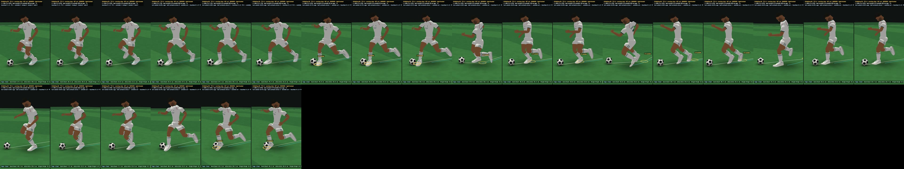
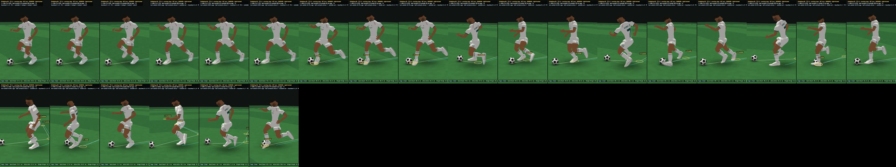
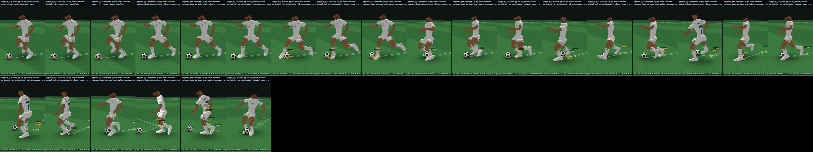
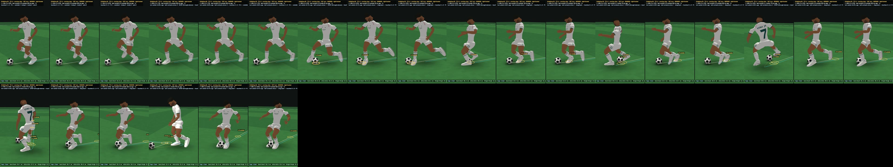
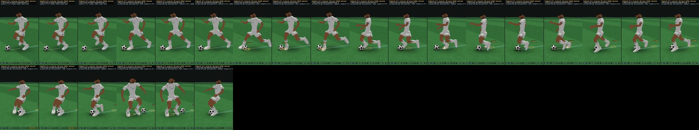
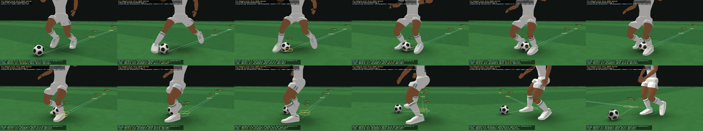
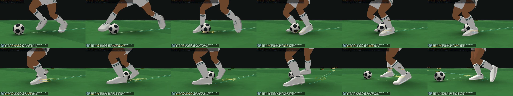
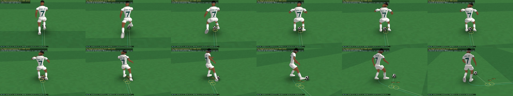

TECHNICAL-CONTROL-1.4 — Dribbling 99 = the fastest technique, not the most touches (candidate, not frozen)
LOCAL review page — the character is a real player's model: never published. Lab: http://127.0.0.1:8361/sandbox/visual/technical_control14.html — Model: TC1.4 · TC1.2 technique · Dribbling 99 | 80 | 50 · before vs after; every view's header names the action and counts the ball contacts since the direction change was asked. I cannot play video in real time: the numbers are measured, the motion is yours to judge. Nothing frozen; the fancy-move library is not expanded (owner §19).
1 · What was wrong, what changed
Measured on TECHNICAL-CONTROL-1.2 at 5.5 m/s: a 90° cut took 3 ball contacts, 120° 4, 150° 4 — and Dribbling 99 was no more efficient than 50 (the same, or more). The turn was decided at the next contact (TECHNICAL-CONTROL-1's between-contacts watch was written but never called); a carry touch was put before the action whenever one fitted (setup); after the cut the carry touched at every footfall while the body still turned (recovery); there was no fast through-stance cut.
- The turn decided when it is asked — the contact already on its way can still become the action's when there is Dribbling's adapt time left (99: 0.05 s · 80: 0.10 · 50: 0.16).
- Dribbling = preparation, foot-action speed, the difficulty it can execute (smooth, never banded): a solution's ball contacts, the time to its decisive contact, the time until the body runs on the new line (the body program integrated per candidate), and its difficulty against Dribbling's capability are costs. A touch before the action, planned for it, makes it easier (the lower-rated player's control → cut); the action played on the contact already on its way is the unprepared, hardest version.
- The chop (Ronaldo chop / through-stance cut) for 85 – 165°: the foot away from the turn plays the ball with its inside at mid-swing — sweeping across behind / through the standing leg — while the other foot is planted beside the body; the ball leaves along the new line, the body plants and turns. On the contact already on its way only when the ball is already close (at stride-carry distance it is not: the due touch sets it). TECHNICAL-CONTROL-1.4's body places the standing foot just past and beside the ball.
- The exit: after the action, the next touch once the body runs on the new line (no recovery touches while it turns; earlier only if the ball would be more than 1.2 m away) — a touch is never added to hide low Agility.
- The style's preferred techniques (owner §16), the explosive outside cut's reach at high Dribbling (up to 95°), the Cruyff on a standing leg too.
- Unchanged: TECHNICAL-CONTROL-1.2's carry model (lanes, outside / instep, same foot, running steps), Ball Control's precision, Agility's body, TECHNICAL-CONTROL-1.3's body / phasing work.
2 · The technique-efficiency test (owner §13)
5.5 m/s, Ball Control / Agility 99, turns to the right (a right-footed player), the request at three phases of the touch rhythm (seeds 1 – 3). "Contacts": every ball contact from the request until the body runs on the new line (within 15°, ≥ 2.5 m/s, held 0.2 s) — the touch already due at the request included.
| turn | Dribbling | ball contacts, before → after (3 request phases) | technique after | request → decisive contact s | decisive contact → body on the new line s | request → new line s | exit speed m/s | worst ball – body m |
|---|---|---|---|---|---|---|---|---|
| 30° | 50 | 1 · 1 · 1 → 1 · 0 · 0 | outside cut · outside cut · outside cut | 0.3 → 0.07 | 0.14 → 0.14 | 0.44 → 0.14 | 5.5 → 5.5 | 0.76 → 0.76 |
| 30° | 70 | 1 · 1 · 1 → 1 · 0 · 0 | outside cut · outside cut · outside cut | 0.3 → 0.07 | 0.14 → 0.14 | 0.44 → 0.14 | 5.5 → 5.5 | 0.69 → 0.69 |
| 30° | 80 | 1 · 1 · 1 → 1 · 0 · 0 | outside cut · outside cut · outside cut | 0.3 → 0.07 | 0.14 → 0.14 | 0.44 → 0.14 | 5.5 → 5.5 | 0.67 → 0.67 |
| 30° | 90 | 1 · 1 · 1 → 1 · 0 · 0 | outside cut · outside cut · outside cut | 0.3 → 0.07 | 0.14 → 0.14 | 0.44 → 0.14 | 5.5 → 5.5 | 0.64 → 0.65 |
| 30° | 99 | 1 · 1 · 1 → 1 · 0 · 0 | outside cut · outside cut · outside cut | 0.3 → 0.07 | 0.14 → 0.07 | 0.44 → 0.14 | 5.5 → 5.5 | 0.63 → 0.63 |
| 60° | 50 | 2 · 2 · 2 → 2 · 1 · 1 | outside cut · outside cut · outside cut | 0.93 → 0.5 | 0.35 → 0.35 | 1.27 → 0.85 | 5.5 → 5.5 | 0.78 → 0.79 |
| 60° | 70 | 3 · 3 · 3 → 2 · 1 · 1 | outside cut · outside cut · outside cut | 0.93 → 0.5 | 0.35 → 0.35 | 1.27 → 0.85 | 5.5 → 5.5 | 0.77 → 0.75 |
| 60° | 80 | 3 · 3 · 3 → 2 · 1 · 1 | outside cut · outside cut · outside cut | 0.93 → 0.5 | 0.35 → 0.35 | 1.27 → 0.85 | 5.5 → 5.5 | 0.75 → 0.73 |
| 60° | 90 | 2 · 2 · 2 → 2 · 1 · 1 | outside cut · outside cut · outside cut | 0.61 → 0.39 | 0.35 → 0.35 | 0.96 → 0.74 | 5.5 → 5.5 | 0.72 → 0.72 |
| 60° | 99 | 2 · 2 · 2 → 1 · 1 · 1 | outside cut · outside cut · outside cut | 0.61 → 0.3 | 0.35 → 0.35 | 0.96 → 0.65 | 5.5 → 5.5 | 0.71 → 0.7 |
| 90° | 50 | 3 · 3 · 3 → 2 · 2 · 2 | outside cut · inside cut · inside cut | 1.26 → 0.7 | 0.47 → 0.49 | 1.73 → 1.23 | 5.31 → 5.31 | 0.97 → 1.01 |
| 90° | 70 | 2 · 2 · 2 → 2 · 1 · 1 | inside cut · outside cut · outside cut | 0.61 → 0.39 | 0.49 → 0.53 | 1.1 → 0.88 | 5.31 → 5.47 | 0.97 → 1 |
| 90° | 80 | 3 · 3 · 3 → 2 · 1 · 1 | inside cut · outside cut · outside cut | 0.61 → 0.39 | 0.52 → 0.53 | 1.13 → 0.88 | 5.26 → 5.47 | 0.73 → 0.99 |
| 90° | 90 | 3 · 3 · 3 → 2 · 1 · 1 | outside cut · outside cut · outside cut | 0.61 → 0.39 | 0.52 → 0.53 | 1.13 → 0.92 | 5.26 → 5.47 | 0.7 → 0.98 |
| 90° | 99 | 3 · 3 · 3 → 1 · 1 · 1 | outside cut · outside cut · outside cut | 0.61 → 0.3 | 0.52 → 0.53 | 1.13 → 0.83 | 5.26 → 5.47 | 0.68 → 0.97 |
| 120° | 50 | 3 · 3 · 3 → 2 · 2 · 2 | drag-back · Cruyff · Cruyff | 1.26 → 0.37 | 0.45 → 0.52 | 1.71 → 1.02 | 4.94 → 4.45 | 0.97 → 0.99 |
| 120° | 70 | 2 · 2 · 2 → 2 · 2 · 2 | inside cut · drag-back · chop | 0.61 → 0.47 | 0.47 → 0.46 | 1.09 → 0.86 | 4.94 → 4.61 | 0.96 → 0.97 |
| 120° | 80 | 3 · 3 · 3 → 2 · 2 · 2 | inside cut · drag-back · chop | 0.61 → 0.5 | 0.53 → 0.41 | 1.14 → 0.86 | 4.78 → 4.76 | 0.8 → 0.95 |
| 120° | 90 | 3 · 3 · 3 → 2 · 2 · 2 | inside cut · drag-back · chop | 0.61 → 0.47 | 0.53 → 0.46 | 1.14 → 0.86 | 4.78 → 4.61 | 0.78 → 0.94 |
| 120° | 99 | 4 · 4 · 4 → 2 · 2 · 2 | chop · drag-back · chop | 0.61 → 0.45 | 0.69 → 0.49 | 1.3 → 0.83 | 5.36 → 4.55 | 0.68 → 0.96 |
| 150° | 50 | 3 · 3 · 3 → 2 · 2 · 2 | drag-back · Cruyff · Cruyff | 1 → 0.37 | 0.28 → 0.55 | 1.27 → 1.05 | 4.43 → 4.45 | 0.91 → 0.99 |
| 150° | 70 | 4 · 4 · 4 → 3 · 1 · 2 | drag-back · drag-back · Cruyff | 1 → 0.5 | 0.28 → 0.35 | 1.27 → 0.85 | 4.43 → 4.45 | 0.84 → 0.92 |
| 150° | 80 | 4 · 4 · 4 → 3 · 2 · 2 | drag-back · drag-back · Cruyff | 1 → 0.5 | 0.28 → 0.35 | 1.27 → 0.85 | 4.43 → 4.45 | 0.87 → 0.9 |
| 150° | 90 | 4 · 4 · 4 → 3 · 2 · 2 | drag-back · drag-back · chop | 1.07 → 0.5 | 0.2 → 0.35 | 1.27 → 0.95 | 4.43 → 4.45 | 0.85 → 1.08 |
| 150° | 99 | 4 · 4 · 4 → 2 · 2 · 2 | chop · drag-back · chop | 1.02 → 0.3 | 0.25 → 0.51 | 1.27 → 0.85 | 4.43 → 4.59 | 0.86 → 1.03 |
| 180° | 50 | 3 · 3 · 3 → 2 · 3 · 2 | drag-back · drag-back · drag-back | 1 → 0.78 | 0.28 → 0.28 | 1.28 → 1.05 | 4.43 → 4.43 | 0.92 → 0.95 |
| 180° | 70 | 4 · 4 · 4 → 2 · 2 · 2 | Cruyff · drag-back · Cruyff | 1 → 0.53 | 0.28 → 0.41 | 1.28 → 0.94 | 4.43 → 4.45 | 0.87 → 0.9 |
| 180° | 80 | 3 · 3 · 3 → 2 · 1 · 2 | Cruyff · drag-back · Cruyff | 1 → 0.53 | 0.33 → 0.41 | 1.33 → 0.94 | 4.45 → 4.45 | 0.9 → 0.89 |
| 180° | 90 | 3 · 3 · 3 → 2 · 2 · 2 | Cruyff · drag-back · Cruyff | 0.61 → 0.53 | 0.41 → 0.41 | 1.02 → 0.94 | 4.45 → 4.45 | 0.9 → 0.88 |
| 180° | 99 | 3 · 3 · 3 → 2 · 2 · 2 | Cruyff · drag-back · Cruyff | 0.61 → 0.53 | 0.41 → 0.41 | 1.02 → 0.94 | 4.45 → 4.45 | 0.88 → 0.87 |
Turns to the left at 99 (the right foot, his carrying foot, plays the inside cut across / the chop)
| turn left | seed | contacts | technique | request → line s | sep m | contacts (foot · surface · s after the request; * the action's, ! the decisive) |
|---|---|---|---|---|---|---|
| 30° | 1 | 1 | inside cut | 0.196 | 0.64 | RI@0.07*! |
| 90° | 1 | 1 | inside cut | 0.567 | 0.83 | RI@0.07*! |
| 150° | 1 | 2 | chop | 1.042 | 1.06 | RO@0.07 RI@0.53*! |
| 30° | 2 | 0 | double touch | 0.142 | 1.2 | |
| 90° | 2 | 1 | inside cut | 0.992 | 0.93 | RI@0.50*! |
| 150° | 2 | 2 | drag-back | 0.846 | 1.68 | RS@0.50*! RO@0.81 |
| 30° | 3 | 1 | inside cut | 0.421 | 0.64 | RI@0.30*! |
| 90° | 3 | 1 | inside cut | 0.792 | 0.95 | RI@0.30*! |
| 150° | 3 | 2 | chop | 1.267 | 1.03 | RO@0.30 RI@0.76*! |
| 60° | 1 | 1 | inside cut | 0.425 | 0.76 | RI@0.07*! |
| 120° | 1 | 2 | chop | 1.021 | 0.79 | RO@0.07 RI@0.53*! |
| 180° | 1 | 2 | Cruyff | 0.942 | 0.81 | RI@0.07 RI@0.53*! |
| 60° | 2 | 1 | inside cut | 0.85 | 0.65 | RI@0.50*! |
| 120° | 2 | 1 | inside cut | 0.975 | 0.83 | RI@0.50*! |
| 180° | 2 | 2 | drag-back | 0.85 | 1.68 | RS@0.50*! RI@0.81 |
| 60° | 3 | 1 | inside cut | 0.65 | 0.64 | RI@0.30*! |
| 120° | 3 | 1 | inside cut | 0.775 | 0.87 | RI@0.30*! |
| 180° | 3 | 2 | Cruyff | 1.167 | 0.87 | RI@0.30 RI@0.71! |
3 · Dribbling 99 | 80 | 50 on the same direction change (owner §19)
60°

90°

120°

150°

180°

To the left (120°, 150°)
4 · The chop (Dribbling 99, 120° to the right)
The touch already due when the turn is asked sets the ball (right foot); 0.22 s after the request the left foot chops it with the inside at mid-swing across the standing right leg; the body is on the new line 0.71 s after the request (TECHNICAL-CONTROL-1.2: 4 contacts, 1.30 s).



5 · Before (TECHNICAL-CONTROL-1.2's technique, the same body) vs after, Dribbling 99
6 · The attributes (owner §11, §12) and the styles (owner §16)
| turn | ratings | contacts before → after | technique after | decisive contact: direction error °, speed error | contact → line s |
|---|---|---|---|---|---|
| 30° | D50 · BC99 · A50 | 1 · 1 · 1 → 0 · 1 · 0 | outside cut · outside cut · outside cut | 0°, 0% | 0.22 → 0.22 |
| 30° | D99 · BC50 · A99 | 1 · 1 · 1 → 1 · 1 · 0 | outside cut · inside cut · outside cut | 2.2°, 1% · 2.3°, 2% | 0.14 → 0.09 |
| 30° | D99 · BC99 · A50 | 1 · 1 · 1 → 0 · 0 · 1 | outside cut · outside cut · outside cut | 0.2°, 0% | 0.22 → 0.15 |
| 60° | D50 · BC99 · A50 | 3 · 3 · 3 → 1 · 1 · 2 | outside cut · outside cut · outside cut | 0.4°, -1% · 0.4°, -0% · 0.3°, -1% | 0.07 → 0.61 |
| 60° | D99 · BC50 · A99 | 2 · 2 · 2 → 1 · 1 · 1 | outside cut · inside cut · outside cut | 1.1°, 2% · 2.3°, 3% · 3.9°, -2% | 0.35 → 0.35 |
| 60° | D99 · BC99 · A50 | 3 · 3 · 3 → 1 · 1 · 1 | outside cut · outside cut · outside cut | 0.1°, 0% · 0.4°, -1% · 0.4°, -0% | 0.61 → 0.61 |
| 90° | D50 · BC99 · A50 | 4 · 4 · 4 → 2 · 2 · 2 | outside cut · inside cut · inside cut | 0.4°, -1% · 0.2°, -0% · 0.3°, -1% | 0.59 → 0.62 |
| 90° | D99 · BC50 · A99 | 3 · 3 · 3 → 1 · 1 · 1 | outside cut · outside cut · inside cut | 3.8°, -4% · 1.5°, 5% · 1.2°, 4% | 0.52 → 0.53 |
| 90° | D99 · BC99 · A50 | 4 · 4 · 4 → 2 · 1 · 1 | chop · outside cut · outside cut | 0.4°, -1% · 0.2°, -1% · 0°, -0% | 0.69 → 0.7 |
| 120° | D50 · BC99 · A50 | 4 · 4 · 4 → 3 · 2 · 3 | drag-back · Cruyff · drag-back | 0.1°, -1% · 0.9°, -0% · 0.3°, -1% | 0.74 → 0.55 |
| 120° | D99 · BC50 · A99 | 4 · 4 · 4 → 1 · 2 · 2 | inside cut · chop · chop | 1°, 4% · 6.8°, -14% · 7.5°, -13% | 0.69 → 0.49 |
| 120° | D99 · BC99 · A50 | 4 · 4 · 4 → 2 · 2 · 2 | chop · inside cut · chop | 1.6°, -1% · 0.2°, -1% · 1.7°, -1% | 0.55 → 0.9 |
| 150° | D50 · BC99 · A50 | 3 · 3 · 3 → 3 · 3 · 2 | drag-back · drag-back · Cruyff | 0.3°, -1% · 0°, -1% · 0.9°, -0% | 0.57 → 0.58 |
| 150° | D99 · BC50 · A99 | 4 · 5 · 4 → 2 · 2 · 2 | chop · chop · chop | 8.8°, -8% · 14.2°, -6% · 60.3°, 72% | 0.25 → 0.56 |
| 150° | D99 · BC99 · A50 | 4 · 4 · 4 → 3 · 3 · 3 | chop · chop · drag-back | 0°, -1% · 0.8°, 0% · 0°, -1% | 0.57 → 0 |
| 180° | D50 · BC99 · A50 | 3 · 3 · 3 → 3 · 3 · 3 | drag-back · drag-back · drag-back | 1.7°, -1% · 0.1°, -1% · 0.2°, -1% | 0.58 → 0.59 |
| 180° | D99 · BC50 · A99 | 3 · 5 · 3 → 2 · 2 · 2 | Cruyff · Cruyff · Cruyff | 2.5°, -4% · 2.6°, -2% · 1.5°, -11% | 0.41 → 0.46 |
| 180° | D99 · BC99 · A50 | 5 · 5 · 5 → 2 · 2 · 2 | Cruyff · Cruyff · Cruyff | 0.3°, -1% · 0.3°, -1% · 0.1°, -2% | 0.78 → 0.66 |
| turn | style (Dribbling 99) | contacts before → after | technique after | request → line s | sep m |
|---|---|---|---|---|---|
| 60° | CLOSE_CONTROL | 3 · 3 · 3 → 2 · 2 · 2 | drag across · drag across · drag across | 0.98 → 0.65 | 0.65 |
| 60° | DIRECT_RUNNER | 2 · 2 · 2 → 1 · 1 · 1 | outside cut · outside cut · outside cut | 1.16 → 0.85 | 1.15 |
| 60° | DOMINANT_CLOSE | 2 · 2 · 2 → 1 · 1 · 1 | inside cut · inside cut · inside cut | 0.96 → 0.65 | 0.65 |
| 60° | TWO_FOOT | 3 · 3 · 3 → 1 · 1 · 1 | outside cut · outside cut · outside cut | 0.98 → 0.65 | 0.7 |
| 90° | CLOSE_CONTROL | 4 · 4 · 4 → 2 · 2 · 2 | drag across · drag across · drag across | 1.23 → 0.83 | 1 |
| 90° | DIRECT_RUNNER | 3 · 3 · 3 → 1 · 1 · 1 | outside cut · outside cut · outside cut | 1.33 → 1.03 | 1.16 |
| 90° | DOMINANT_CLOSE | 3 · 3 · 3 → 1 · 1 · 1 | inside cut · inside cut · inside cut | 1.13 → 0.79 | 1.4 |
| 90° | TWO_FOOT | 4 · 4 · 4 → 1 · 1 · 1 | outside cut · outside cut · outside cut | 1.23 → 0.83 | 0.97 |
| 120° | CLOSE_CONTROL | 4 · 4 · 4 → 2 · 2 · 2 | chop · chop · drag-back | 1.3 → 0.83 | 0.96 |
| 120° | DIRECT_RUNNER | 3 · 3 · 3 → 1 · 2 · 2 | drag-back · drag-back · chop | 1.34 → 0.93 | 1.67 |
| 120° | DOMINANT_CLOSE | 3 · 3 · 3 → 2 · 1 · 1 | chop · inside cut · inside cut | 1.14 → 0.97 | 1.2 |
| 120° | TWO_FOOT | 4 · 4 · 4 → 2 · 2 · 2 | drag-back · chop · chop | 1.3 → 0.83 | 0.96 |
| 150° | CLOSE_CONTROL | 4 · 4 · 4 → 2 · 2 · 2 | Cruyff · chop · drag-back | 1.27 → 0.85 | 1.02 |
| 150° | DIRECT_RUNNER | 4 · 4 · 4 → 1 · 2 · 2 | drag-back · drag-back · chop | 1.48 → 0.95 | 1.67 |
| 150° | DOMINANT_CLOSE | 2 · 2 · 2 → 2 · 2 · 2 | chop · drag-back · chop | 1.01 → 1.05 | 1.06 |
| 150° | TWO_FOOT | 5 · 5 · 5 → 2 · 2 · 2 | drag-back · chop · chop | 1.27 → 0.85 | 1.03 |
7 · Open and tight carrying (owner §7, §8) · the carry model preserved (owner §6)
| section | Dribbling | TC1.2: touches /s · footfalls between | TC1.4 |
|---|---|---|---|
| straight 5.5 m/s | 99 | 1.73 · 2 | 1.73 · 2 |
| straight 5.5 m/s | 80 | 1.73 · 2 | 1.73 · 2 |
| straight 5.5 m/s | 50 | 1.73 · 2 | 1.73 · 2 |
| open sprint 7.5 m/s | 99 | 1.15 · 4 | 1.15 · 4 |
| open sprint 7.5 m/s | 80 | 1.15 · 4 | 1.15 · 4 |
| open sprint 7.5 m/s | 50 | 1.15 · 4 | 1.15 · 4 |
| acceleration into space 3 → 8.5 | 99 | 1.01 · 6 | 1.01 · 6 |
| acceleration into space 3 → 8.5 | 80 | 1.01 · 6 | 1.01 · 6 |
| acceleration into space 3 → 8.5 | 50 | 1.01 · 6 | 1.01 · 6 |
| tight left-right sequence 4 m/s | 99 | 2.21 · 2 | 2.21 · 2 |
| tight left-right sequence 4 m/s | 80 | 2.21 · 2 | 2.21 · 2 |
| tight left-right sequence 4 m/s | 50 | 1.96 · 2 | 1.96 · 2 |
| TC1.2's carry course | outside | inside | instep | sameFoot | preferredFoot | preferredLane | crossingsPerS | touchesPerS |
|---|---|---|---|---|---|---|---|---|
| DOMINANT_CLOSE/L | 0.769 → 0.757 | 0.076 → 0.088 | 0.155 → 0.155 | 1 → 1 | 1 → 1 | 0.974 → 0.97 | 0.152 → 0.144 | 1.569 → 1.518 |
| TWO_FOOT/B | 0.636 → 0.608 | 0.164 → 0.192 | 0.2 → 0.2 | 0.849 → 0.862 | null → null | null → null | 0.367 → 0.298 | 1.734 → 1.647 |
| DOMINANT_CLOSE/R | 0.769 → 0.757 | 0.076 → 0.088 | 0.155 → 0.155 | 1 → 1 | 1 → 1 | 0.978 → 0.979 | 0.152 → 0.099 | 1.569 → 1.518 |
| NEUTRAL/R | 0.682 → 0.572 | 0.118 → 0.128 | 0.2 → 0.3 | 0.975 → 0.935 | 0.967 → 0.856 | 0.943 → 0.824 | 0.243 → 0.196 | 1.608 → 1.555 |
8 · The phasing on the same body (owner §18), the checks, the CPU
| 108 runs (the efficiency cases × D 99 / 80 / 50 × 3 seeds × both sides) | TC1.2's cuts + TC1.3's body | TC1.4 + its body | TC1.3's torture set at 99 on TC1.4 |
|---|---|---|---|
| frames with intersecting legs | 286 | 389 | 14 |
| runs with any | 56 | 52 | 3 |
| worst overlap cm | -2.6 | -2.6 | -6.3 |
| pops per run (median) | 16 | 11 | 7.5 |
| instant support swaps | 15 | 5 | 0 |
| planted slip median mm | 0.8 | 0.6 | 2 |
| … worst mm | 17.1 | 47.8 | 26.3 |
| pelvis acc worst m/s² | 1082 | 1060 | 712 |
| ankle acc worst m/s² | 11947 | 13091 | 13044 |
- Checks (efficiency matrix, carry course, receive chain): deterministic 163/163 · the body leaves gameplay untouched 163/163 · the posed skeleton repeatable 163/163 · failures 0.
- Protected and reference files: 1413/1414 identical; 1 changed as expected; 0 unexpected.
- CPU (ms per simulated second, median): simulation 13 → 12.1; with the body 103.3 → 100.9 (worst step 45.9 ms).